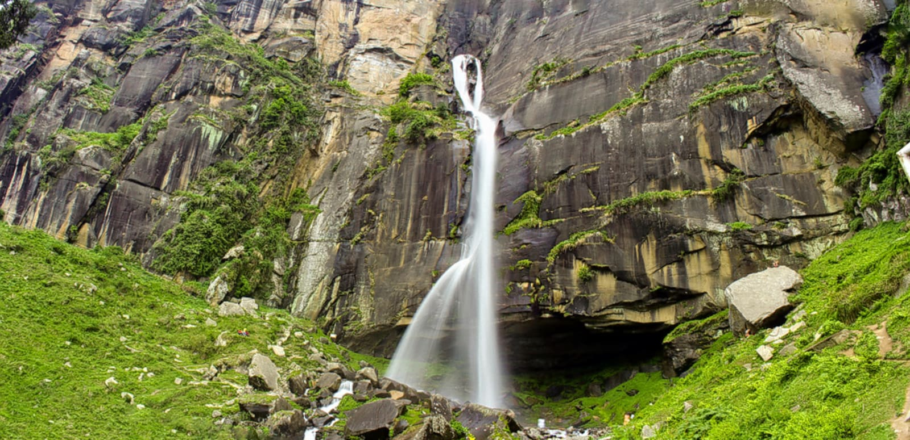
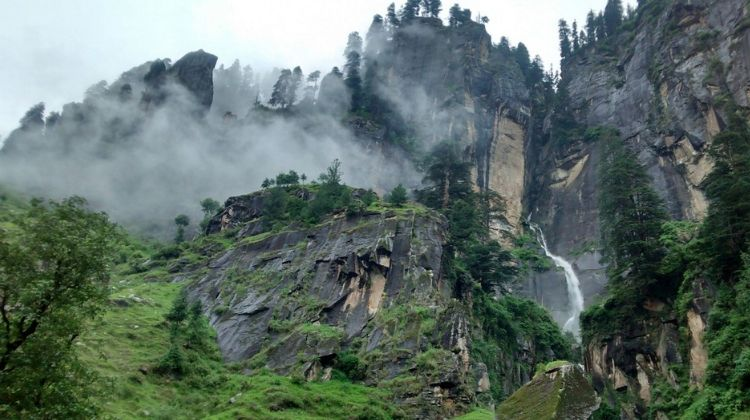
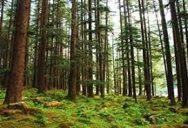

Peace in the Mountains
Day 1 : The Nightlife of Manali is best enjoyed, after treading through the tranquil Himalayas. The relaxing vibe of Manali's cafes, puts the shear workload, that your muscles under-went in the previous few days, to relax mode.The trek of Patalsu Peak had ended, in a somewhat satisfactory note, it was time to party, Somie we took to. The ambience of the place, the soft music being played, the scrumptious food dishes; took us to an unusually calm spot. Fortune said - "You are not going to leave Manali, this early, Manali had me now."


Day 2 : The next day was nothing short of adventure, we were on a day hike to Jogini Waterfalls, taking the trail. The hike was not all smooth sailing, it took us a little more than an hour to reach the top but every bit of it was worth it. The waterfall's beauty was beyond imagination, more so because of the rainbow in the background.

Day 3: After spending an hour at the location, we were back to the streets of Manali, this time after taking a route, through the woods.t was night time pretty soon, after a visit to the cafe to eat lunch and roaming Manali by foot. We were strolling in the streets, when we heard flute voices coming from somewhere in the city, which drew us to it and in about half an hour.
Religious tourism, adventure tourism, wildlife tourism – whatever it is that you’re searching for or you want everything combined in one trip, Manali will give you all this and more.